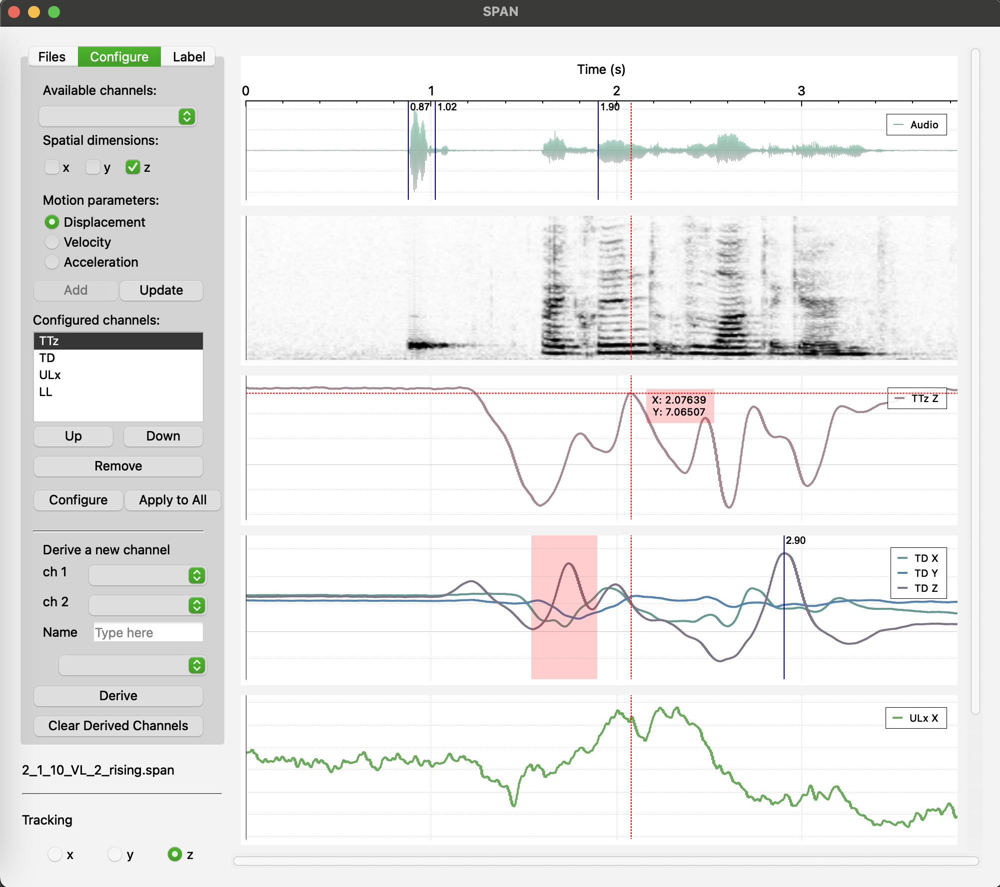
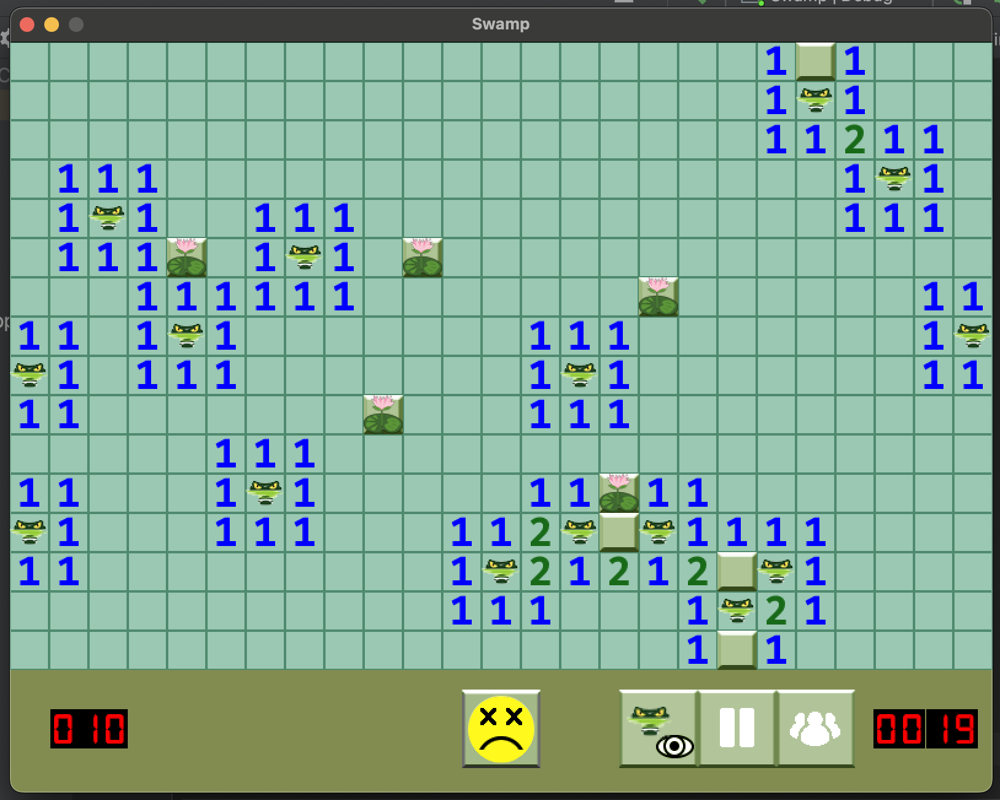
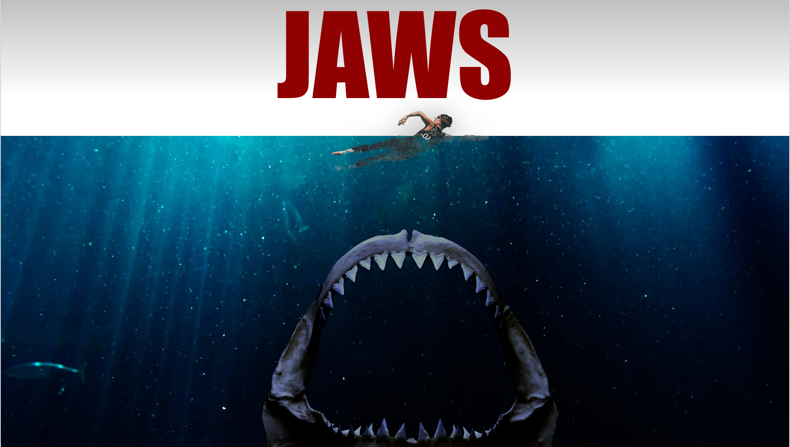
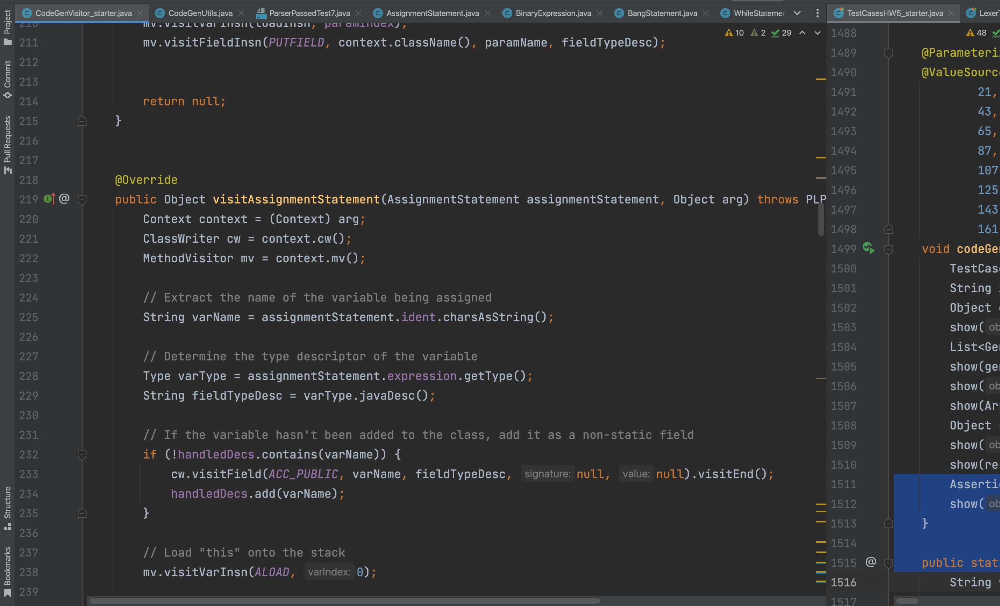
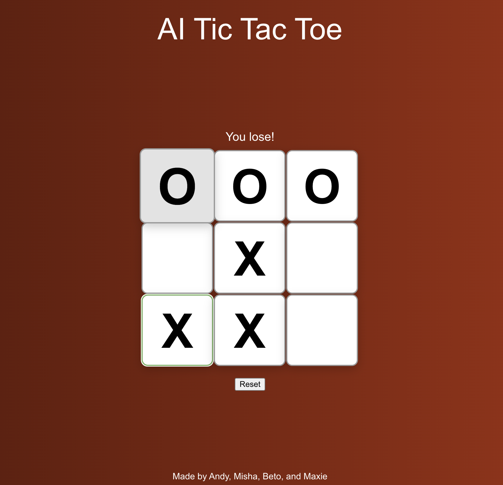
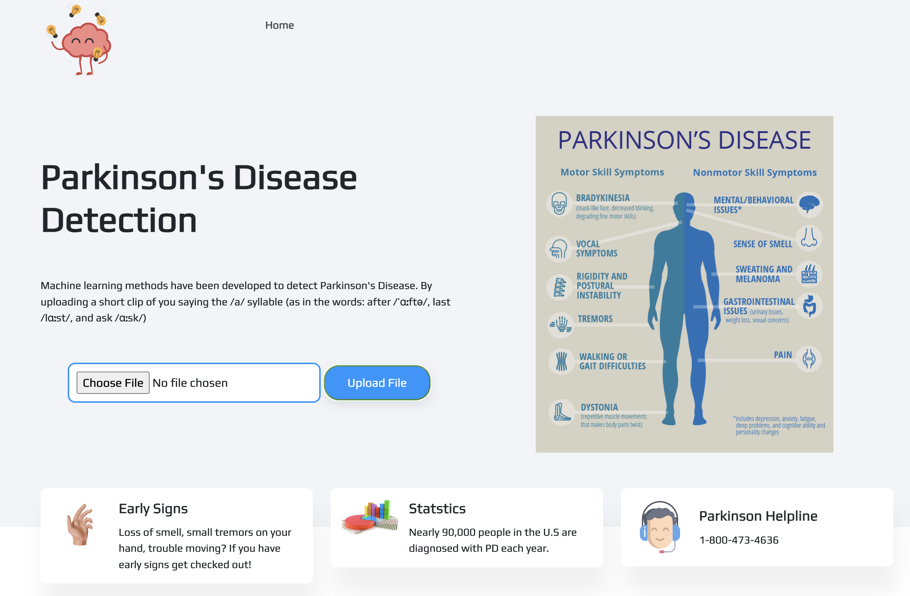
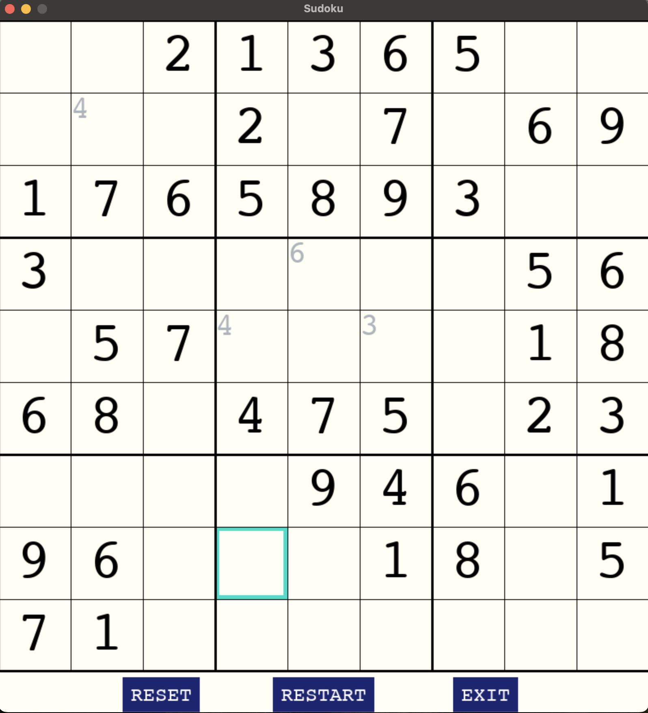

The Speech Analysys Software

(click on the image to learn more)
My application, named SPAN (Speech Analysis Software), is designed to enhance the analysis of kinematic and acoustic speech data generated by Electromagnetic Articulography (EMA) system, specifically from the AG501 Carstens systems.
This graphical user interface tool aims to improve efficiency and reliability of data analysis.
A fresh twist on the classic, beloved Minesweeper game

(click on the image to learn more)
Reimagined Minesweeper with a Gator Nation twist using the SFML library
Shark Species ML Classification from Bite Images

(click on the image to learn more)
Machine learning classification model to identify shark species using bite images
Java-Based Compiler on JVM

(click on the image to learn more)
Developed a compiler for a small language on the JVM, including tokenization, syntax parsing, semantic analysis, and bytecode generation
Pathfinding Algorithms: Comparing Dijkstra's and A*

(click on the image to learn more)
This comparison highlights the differences between Dijkstra's and A* (A-Star) algorithms, focusing on their efficiency, optimality, and suitability for various pathfinding tasks.
Tic-Tac-Toe AI: Classifier and Regressor Evaluation

(click on the image to learn more)
Developed a Jupyter notebook to evaluate classifiers and regressors, using tic-tac-toe datasets. The MLP classifier achieved 94.9% accuracy, excelling in predicting optimal moves for player 'O'
Early Parkinson's Detection via Acoustic Analysis

(click on the image to learn more)
Built a machine learning model for early Parkinson's detection through vocal analysis. After data preprocessing and exploratory analysis, we tested models like KNN and SVM. The final model, evaluated on key metrics, was deployed in a web app for speech-based risk assessment.
Sudoku Solver: Python-Powered Puzzle Challenge

(click on the image to learn more)
Developed a Sudoku game using Python and Pygame, featuring an interactive UI and customizable difficulty levels.